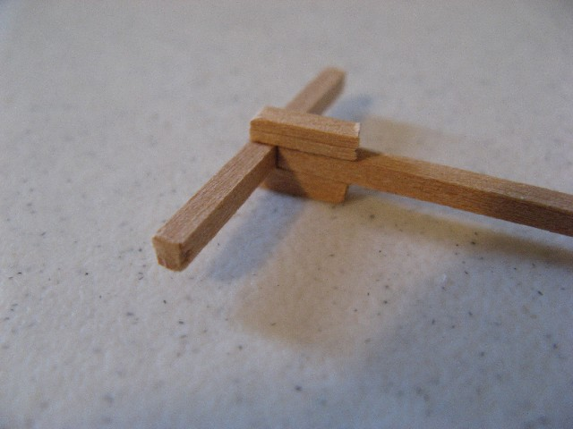

← Back to Year 9 T1 Toolkits
Design
Learning Focus

By the end of this toolkit, you will be able to:
- Interpret the design brief: Understand height requirements, footprint limits, material constraints, and test specifications.
- Create effective tower layouts: Design truss structures with proper triangulation, load paths, and member sizing.
- Plan joint details: Select appropriate joining methods (gussets, laps, adhesives) and plan joint locations for strength and buildability.
- Select materials: Choose materials based on strength-to-weight, workability, and cost considerations.
- Develop build sequences: Create logical, step-by-step build plans that ensure quality and safety.
- Produce technical sketches: Create orthogonal drawings (top/front views) with dimensions, annotations, and load path indicators.
Timing: Complete Toolkit 3 design work in Weeks 2-3 before starting your build in Toolkit 4 (Weeks 3-5). Good planning here saves time and improves build quality.
Understanding the Design Brief

Before you start sketching, make sure you understand every requirement in the design brief:
- Height requirement: Minimum height your tower must achieve (e.g., 300 mm).
- Footprint limits: Maximum base dimensions (e.g., 150 mm × 150 mm).
- Material constraints: What materials are allowed (e.g., balsa wood, popsicle sticks, glue, string).
- Load requirement: What load the tower must carry (e.g., minimum 5 kg, or as much as possible).
- Test method: How the load will be applied (central point load, distributed load, etc.).
- Design constraints: Any restrictions on bracing, joint types, or construction methods.
Design Tip: Link every sketch to forces: which members are in compression (risk of buckling) and which are in tension (check joints). This helps you make informed design decisions.
Tower Layout Design
1. Structural Form
Your water tower will use a truss structure. Apply the concepts from Toolkit 2:
- Triangulate every panel: Avoid long unbraced columns. Add cross-bracing near the base where moments are highest.
- Keep bays consistent: Use the same spacing and bracing pattern on all four sides to avoid twists and uneven loading.
- Minimise weight: Shorten compression members and use tension ties where possible. Remember: every gram counts.
- Direct load paths: Design so loads travel directly from the deck to the legs to the base. Avoid unnecessary members.
2. Member Sizing
Consider the forces each member will carry:
- Legs (vertical members): Carry most of the compression load. These are your critical members - keep them short and well-braced.
- Bracing (diagonal members): Provide triangulation and resist racking. Can be thinner than legs but must be strong enough to resist buckling.
- Deck/horizontal members: Transfer load to legs. Must be stiff enough to avoid excessive deflection.
- Base members: Distribute load to supports. Should be wide enough to prevent tipping.
3. Load Path Analysis
Sketch arrows showing how load travels:
- Start at the load application point (usually centre of deck).
- Follow the load down through deck members to the legs.
- Trace compression forces down the legs to the base.
- Identify which members are in tension (ties) and which are in compression (struts).
- Mark members that are likely to buckle (long compression members) - these need extra attention.
Joint Design & Planning

1. Joint Types
Choose joints based on the forces they must resist:
- Gussets or double laps: Spread load across a larger area. Use for high-stress joints (leg-to-base, leg-to-deck).
- Single lap joints: Simpler but weaker. Only use for low-stress connections.
- Butt joints: Weakest option. Avoid unless absolutely necessary.
2. Joint Planning
- Keep opposing faces parallel: Avoid gaps that cause racking. Dry-fit first, then glue.
- Plan glue area: Larger contact area = stronger joint. Design joints with adequate overlap.
- Consider build sequence: Some joints are easier to make if you build in a specific order (e.g., attach bracing before closing up the frame).
- Stage assembly symmetrically: Build pairs (e.g., two opposite sides) to control twist and keep the tower plumb.
3. Quality Checks
- Pre-cut identical members in batches; label parts; keep offcuts for spares.
- Plan to measure base diagonals; adjust before glue cures so the frame sits flat.
- Design jigs or fixtures to hold members in position during gluing.
Materials Selection
Consider these factors when choosing materials:
- Strength-to-weight ratio: Choose materials that are strong for their weight (e.g., balsa wood vs. heavier timber).
- Workability: Can you cut, shape, and join the material easily with available tools?
- Cost: Stay within material budget constraints.
- Availability: Ensure materials are available when needed.
- Consistency: Use the same material grade/size throughout for predictable behaviour.
Common choices:
- Balsa wood: Lightweight, easy to cut, good strength-to-weight. Standard choice for model towers.
- Popsicle sticks: Consistent size, readily available. May be heavier than balsa but easier to work with.
- Adhesives: PVA glue for timber (needs clamping time), cyanoacrylate for quick fixes (brittle).
Build Sequence Planning
Create a logical, step-by-step build plan:
- Preparation: Read brief, gather materials, check tools, review SWMS.
- Cutting: Cut all members to length (batch cutting for identical pieces). Label parts.
- Base assembly: Build base frame, check squareness, allow glue to cure.
- Leg assembly: Attach legs to base, ensure vertical alignment, add temporary bracing if needed.
- Bracing: Add diagonal bracing systematically (one bay at a time), maintain symmetry.
- Deck: Attach deck/horizontal members at top, ensure level and centred.
- Final checks: Measure dimensions, check squareness, inspect joints, remove temporary supports.
- Pre-test inspection: Check for obvious weaknesses, confirm load point, record any flaws.
Build tips:
- Allow glue joints to cure fully before loading; rushing reduces joint strength.
- Use jigs, squares and blocks to keep legs vertical and bracing at planned angles.
- Measure twice, cut once; mark from a datum edge to reduce error build-up.
- Clamp material firmly before cutting or drilling; keep non-working hand out of the line of fire.
Technical Sketching

Produce clear technical sketches for your folio:
Required Views
- Top view: Shows base footprint, leg positions, deck layout.
- Front/side view: Shows height, leg arrangement, bracing pattern, deck position.
- Isometric (optional): 3D view showing overall form.
Annotations
- Dimensions: Overall height, base dimensions, member lengths, spacing.
- Load paths: Arrows showing how load travels through the structure.
- Member roles: Label compression members (struts) and tension members (ties).
- Joint details: Show gusset sizes, overlap lengths, glue areas.
- Material notes: Material type, cross-section sizes, member grades.
Design Rationale
Include brief notes explaining:
- Why you chose this layout (triangulation, load paths, efficiency).
- Why you sized members as you did (compression vs tension, buckling risk).
- Why you placed joints where you did (force transfer, buildability).
- What you expect to fail first and why (identify the weakest link).
Activities & Evidence
1) Design Brief Analysis
- Read and annotate the design brief, highlighting all requirements and constraints.
- Create a checklist of requirements to ensure your design meets all criteria.
2) Preliminary Sketches
- Sketch 2-3 different tower layout options (different bracing patterns, member arrangements).
- Compare options: which has better load paths? Which is lighter? Which is easier to build?
- Select your preferred option and justify your choice.
3) Detailed Design
- Create final orthogonal sketches (top/front views) with dimensions.
- Annotate load paths, member roles (struts/ties), and joint details.
- Create a cutting list (member lengths, quantities, materials).
- Write a build sequence (step-by-step plan).
4) Google Classroom Check-in
- Submit your design sketches and build plan before starting construction.
- Get teacher feedback on your design before building.
Resources
- Design brief and requirements sheet.
- Material specifications and cost lists.
- Example tower designs and folios for reference.
- Drawing tools (rulers, set squares, protractors).
- CAD software (optional) for digital drawings.